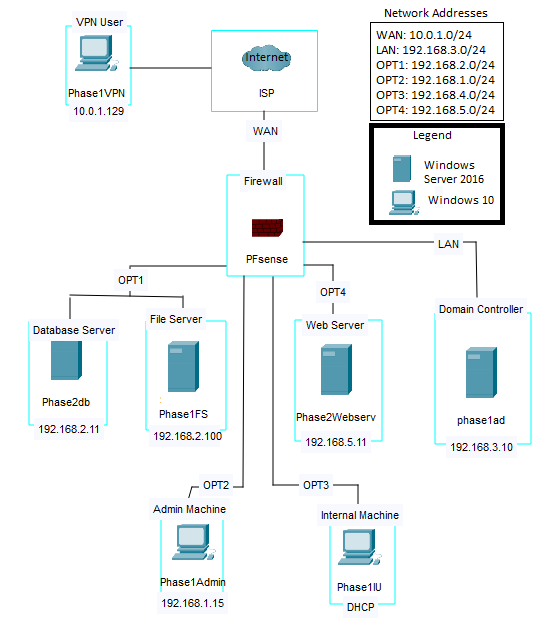

ITSC321 Final Project
- Create a secure nework of systems managed by a central firewall.
- Perform network traffic analysis from a specified machine to prove the success application of the Firewall rules.
- Pfsense Firewall,
- Snort (IDS/IPS)
- Windows Server 2016 / 10
- Wireshark
- OpenVPN
- MySQL Database
- FTP Server
- Apache Webserver
- Refer to the netowork diagram for detailed project outline and network structure. 
Date Completed: April 25, 2021
Objective(s):
Programming Language/Concept/Software Used:
Details: